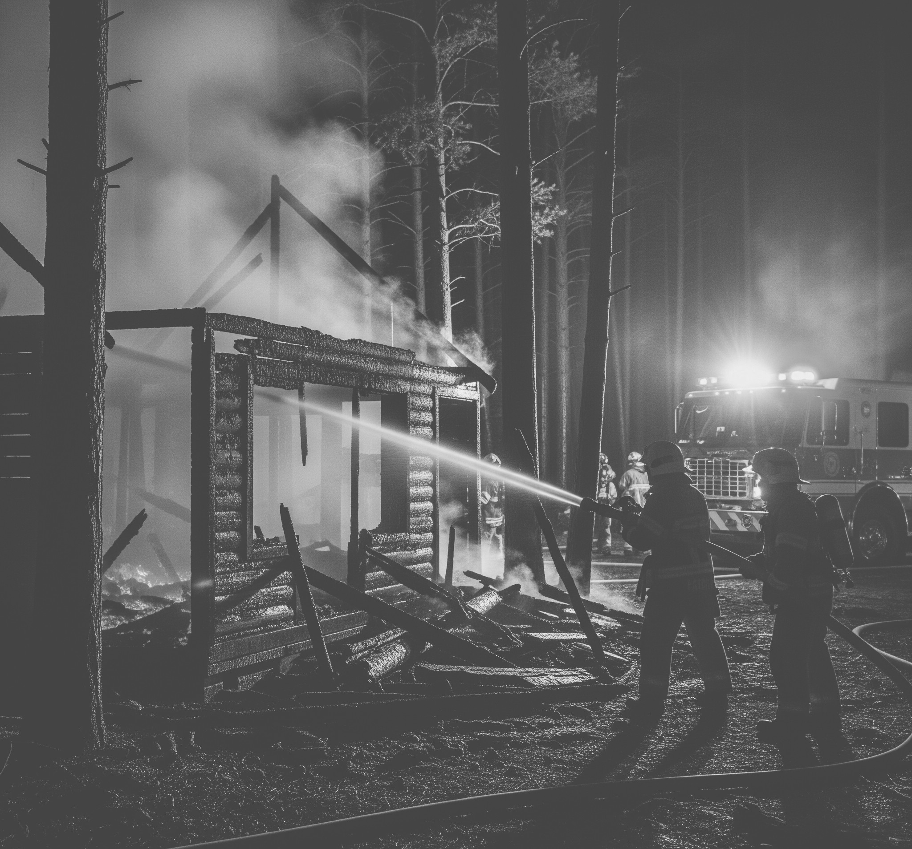
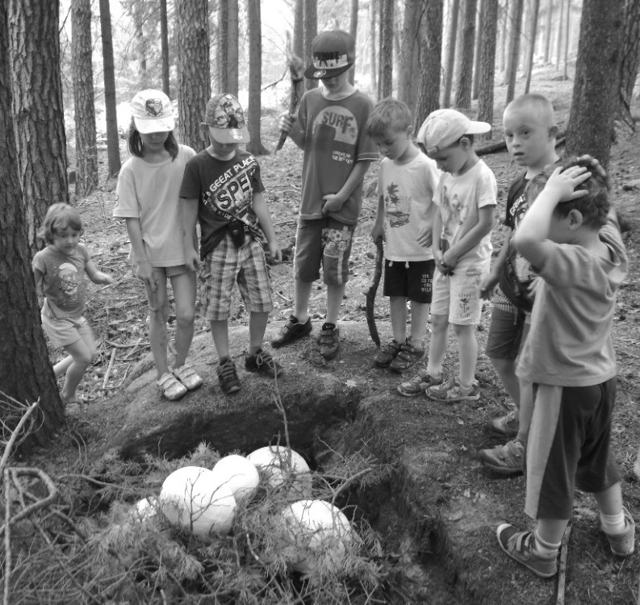
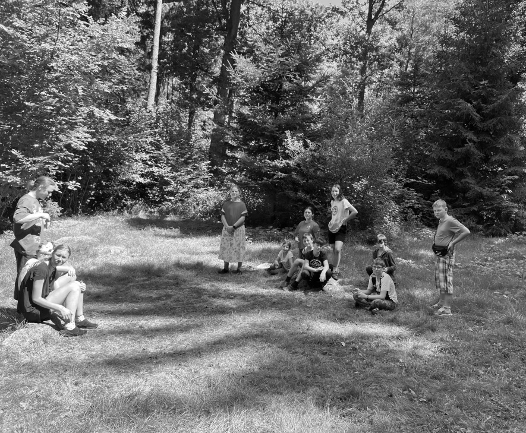

Sedelská pravda
Fakta, názory a konspirační teorie bez repelentu
Fakta, názory a konspirační teorie bez repelentu
Včera krátce po třiadvacáté hodině byl v lesním pásmu u bývalého skladu nářadí nahlášen požár. Když dorazili hasiči, nalezli již jen doutnající zbytky – ohořelé dřevo, kovové součástky a popel.
Při prohledávání místa události však objevili i lidské ostatky. Podle prvotních informací se jednalo o zbytky ohořelých kostí a několik zubů, které byly nalezeny v popelu. Policie nyní pracuje na identifikaci oběti, která zřejmě zemřela v důsledku požáru. Vzhledem k tomu, že místo bylo dlouhodobě opuštěné a nepoužívané, není jasné, kdo zde mohl být přítomen v době požáru.
Mluvčí krajské policie uvedla, že v okolí se v posledních týdnech nikdo pohřešovaný neobjevil. „V tuto chvíli pracujeme s několika verzemi, ale žádná nebyla potvrzena. Bude důležité zjistit, zda se jednalo o náhodné přespání, úkryt nebo jiný důvod, proč se daná osoba na místě nacházela,“ sdělila. Na místě nebyly nalezeny žádné osobní věci ani stopy oblečení, které by mohly pomoci při identifikaci oběti.
Místní obyvatelé jsou událostí znepokojeni. „V noci jsme slyšeli praskání a cítili kouř, ale netušili jsme, že hoří přímo ve skladu,“ řekla jedna z obyvatelek nedaleké usedlosti. Někteří si v předchozích dnech všimli podezřelého pohybu v okolí, ale nepřikládali tomu větší význam. Okolní lesy jsou často využívány jako místo pro táboření, a tak to nikomu nepřišlo podezřelé.
V kriminalistice se již od 19. století využívá analýza stop. Nejen otisků bot, ale i specifické chůze. Podiatři mohou ze série stop rozpoznat unikátní rysy, jako je postavení prstů, způsob došlapu, tlak chodidla nebo nepravidelné poranění, a porovnat je s referenčními otisky podezřelého. Tento proces se řídí osvědčenou metodikou ACE‑V: Assessment, Comparison, Evaluation, Verification
Na světoznámém vrchu Bída došlo včera odpoledne ke střelbě, která vyvolala paniku mezi turisty. Podrobnosti zatím nejsou dostupné, protože policie na ně uvalila informační embargo. Redakci se v době uzávěrky tohoto vydáníi podařilo získat exkluzivní informace, které budou zveřejněny v příštím čísle.
Na místo byli přivoláni specialisté z kriminalistické laboratoře, kteří provádějí další šetření. Podle dostupných informací bude identifikace ztížena kvůli rozsahu poškození těla. Policie zároveň vyzývá veřejnost, aby se přihlásil kdokoli, kdo mohl v poslední době v okolí vidět něco neobvyklého.
Sedelská pravda bude případ nadále sledovat.
Pokud jsou k dispozici dynamické otisky (např. řada střídavých stop), odborník pozná tzv. „ghosting“ — tedy dvojí stíny kolem paty a prstů, které vznikají při skutečné chůzi. Expert pak odebere referenční otisky od podezřelých (např. inkem nebo speciální sadou) — a nejlépe ve stejném režimu chůze, jakým byl čin proveden. Porovnáním liniových měření (např. vzdálenosti mezi body) a tvarových rysů (prsty, oblouk chodidla, špičky) se výsledek ověří a vyhodnotí.
Kromě stop na zemi se dnes stále častěji analyzuje chůze z videodohledu. Forenzní gait‑analýza sleduje parametry jako délka kroku, postoj těla, pohyb paží či ramenní rotace. Moderní algoritmy, často využívající umělou inteligenci, umí s vysokou přesností rozeznat osobu podle jejího způsobu chůze i z videozáznamu — a to i když je obličej skrytý nebo nekvalitně zachycený.
Přestože lidské stopy v bahně nebo krvi na zemi jako důkaz sahají až do 19. století (například případ Jessie McLachlan z roku 1862), formální disciplína forensic podiatry vznikla až v 90. letech 20. století. První použití gait‑analýzy jako soudního důkazu pochází z roku 2000 u britského soudu Old Bailey (případ R v. Saunders). Od té doby vznikla například americká společnost ASFP, kurzy na univerzitě Huddersfield (UK) a mezinárodní standardy odborné praxe ve forensic podiatry.
Stejný princip najde dnes využití i v identifikaci pneumatik u vozidel. Na místě činu lze najít skid marks — otisky pneumatik po brzdění nebo smyku. Tyto stopy se fotografují s měřítkem, nebo se odlévají do sádry či speciálních materiálů (např. prill sulfur ve sněhu)
Díky databázím vzorů pneumatik (např. databáze SICAR) lze alespoň určit značku, model či velikost pneumatiky. Pokud je k dispozici vozidlo podezřelého, slouží analýza otěrů nebo poškození běhounu k individuálnímu přiřazení stopy konkrétnímu autu.
Forenzní analýza stop a chůze zůstává důležitým nástrojem – i v době, kdy máme DNA či biometrické systémy. Jak staré stopy vedou k identifikaci pachatele, tak moderní stopy pneumatik mohou odhalit, jaké auto projelo scénou crime. Techniky se změnily, princip zůstává: každý zanechává svou jedinečnou stopu.
Včera v podvečer došlo k menší společenské erupci v jinak klidné sedelské michelinské restauraci U Tří lžic. Neznámá postarší dáma s výrazným make-upem, blond trvalou a hlasem laděným do tónu připálené pánve si nechala třikrát vyměnit hlavní chod – pokaždé kvůli blonďatému vlasu zamotanému mezi mušlemi.
„Je to nehoráznost! Já jsem si přišla pochutnat, ne česat mušle!“ rozčilovala se, zatímco personál postupně ztrácel barvu – obrazně i doslova.
Celá záležitost však nabrala zcela jiný rozměr ve chvíli, kdy šéfkuchař Radim A. zmínil, že všichni členové kuchyně i obsluhy mají tmavé vlasy. Přesněji – od tmavě hnědé po havraní čerň.
„To je jasné, že to není můj vlas! Já mám vlasy jako sláma, ne jako nějaká odbarvená blondýna!“ křičela dáma na celou restauraci, zatímco jí z očí sršely blesky.
Nakonec tato dáma opustila restauraci hladová s tím, že si na personál bude stěžovat u hygienické stanice a že si nechá udělat test DNA, aby prokázala, že to není její vlas.
Podle posledních zpráv si dáma skutečně objednala genetickou analýzu. Laboratoř však požádala, aby nejdříve odstranila lak, tužidlo, zbytky melíru a třpytky, jinak prý hrozí výbuch přístroje. Restaurace zvažuje zavedení bezvlasového menu.
Proč mají slepé děti rády makové rohlíky?
Protože je na každém jiná pohádka.
Skupina zvídavých dětí podnikla výpravu proti proudu času – lodí se vydaly podél tajemné řeky, která je zavedla do dob dávno minulých. Jak pokračovaly hlouběji do krajiny plné podivných zvuků a mlžných lesů, měnila se příroda kolem nich. Brzy kráčely mezi mamuty, pozorovaly praještěry u jezera a přespávaly v jeskyni s prvními lidmi.
Pralidé děti naučili rozdělávat oheň pomocí pazourku, péct hady na rožni, lovit pomocí oštěpů a rozeznat stopy šelem. Jednoho večera dokonce zahlédly obrovského šavlozubého tygra, jak se tiše plíží mezi stromy – naštěstí měl plný žaludek a nestál o zákusek.
Největší překvapení ale čekalo až na samém konci výpravy. V hlubokém kapradinovém lese, kde se slunce jen
stěží prodíralo skrz husté listoví, děti narazily na něco nečekaného. V mechovém dolíčku objevily děti obrovské hnízdo s několika zvláštními vajíčky. Když se nad nimi sklonily, skořápky začaly praskat – a z nich se vylíhli malí dinosauři. Místo útěku se tvorečci tulili k dětem, tiše pískali a vypadali, že si je oblíbili.
Po návratu si každý malého ještěra odnesl s sebou. Podle všeho se jim daří dobře – mají chuť k jídlu, rádi spí v batohu a milují mazlení za uchem (nebo co to vlastně mají).
Včera během obědové pauzy došlo v sedelském muzeu k drzé krádeži. Pachatel si z expozice druhé světové války odnesl pistoli Walther P38, jenž byla součástí sbírky historických zbraní. Zbraň byla vystavena
v uzamykatelné vitríně a chráněna alarmem. Podle prvotních informací se zloději podařilo během krátké doby alarm deaktivovat, násilně otevřít vitrínu a zbraň ukrást. Kromě zbraně si pachatel odnesl i náboje, které byly vystaveny vedle ní.
Krádež zjistila hlídačka, když se vrátila do služby po obědové pauze. „Šla jsem jen na oběd jako vždycky. Když jsem se vrátila, všimla jsem si, že je vitrína otevřená a zbraň chybí. Alarm byl vypnutý, což je zvláštní, protože ho vždycky kontroluji, když odcházím,“ uvedla Dvořáková.
Zákon č. 119/2002 Sb. nařizuje, že všechny zbraně musí být v muzeích znefunkčněny. Je však nejisté, zda byla pistole P38 v souladu s těmito předpisy. Sbírka totiž pochází z doby, kdy ještě nebyly předpisy tak přísné a zbraně se často vystavovaly v původním stavu. Policie při ohledání místa činu zjistila, že ne všechny zbraně v muzeu jsou znehodnoceny, což může znamenat, že i tato pistole byla funkční.
Policie apeluje na veřejnost, aby se přihlásil kdokoli, kdo by mohl mít informace o krádeži. „Zbraň může být použita k trestné činnosti. Pokud máte jakékoli informace, prosíme, ozvěte se,“ uvedla mluvčí policie.
Redakce upozorňuje, že dopisy nejsou redakčně upraveny a neprošli jazykovou korekturou.
bohužel se ve vašem článku o dobrodruhu jedlickovi vyskytla chyba. Článek je nekompletní a velmi mě zajímal. Opravdu mě urazilo že pokračování článku chybělo. Chtěla bych abyste napsali pokračování do dalších novin a veřejně se omluvili za chybu. Jinak zažaluju vaše noviny za zatajování pravdy. Určitě máte noviny k dohledání a nebudete mi tvrdit že zbylá část článku nechybí.
Vážená milovaná čtenářko,
předně nás těší váš zájem o naše noviny. Hluboce litujeme, že jste si nemohla přečíst celý článek o vašem idolovi, dobrodruhovi Jedličkovi, noviny teď tiskneme ve stížených podmínkách. Abyste nemusela čekat na další výtisk, zde je i něco článku:
........ vyhrožují, že dokončí to, co bílý žralok začal.
Brej den,
Nuže dnes ráno jsem se dočetl o ušmiklé ruce poblíž rybníka a chcu se doptat na nějaké věci..
1. Chtěl bych se zeptat jste si jistí že nešlo o fyzické násilí?
2. Pokud ne udělali ty forenzní technici nějaký test na DNA? jestli ne jsou květaci vyřiďte to a jestli ano proč jste to nemohli napsat?
3. A chirurgická preciznost? Nemáme info o lidech co mají vystudovanou medicínu a mohli by se tak snížit počty podezřelých..
5! A ta kampaaň co to jako jeee? Za prvý já jsem Bukovskej a za druhý jsem nepodváděl. Pokud bych ovšem podváděl jako tak bych v životě nic nepřiznal a kdyby se na to přišlo v životě by mi to nebylo líto jo.
Vážený čtenáři,
ptáte se nás na otázky, na které byste se měl ptát spiše obecní policie. My jsme vydavatelství, jež pracuje s informacemi, které se mnohdy obtížné získávají. Tím jsme vám, předpokládám, odpověděli o na otázku týkající se údajné kampaně.
S pozdravem,
Sedelská pravda
Místní ochotnický soubor je opět v plném nasazení. Redakci se exkluzivně podařilo získat několik fotografií z tajných zkoušek, na nichž jsou herci zachyceni v pestré směsici kostýmů. Podle jejich charakteru to
vypadá, že nás čeká další komediální pecka.
Po loňském fenomenálním úspěchu hry Jomeo a Rulie, která rozesmála publikum od prvního po poslední potlesk, jsou očekávání vysoká. Místní diváci už teď spekulují, co se chystá. Nejčastěji padají tipy na komediální zpracování klasické pohádky Sněhurka a sedm trpaslíků.
Oficiální potvrzení ale od souboru zatím nepřišlo. “Řekneme jen tolik, že to bude něco, co tu ještě nebylo, a že se diváci rozhodně pobaví,” uvedl režisér souboru s tajemným úsměvem.
Premiéra by se podle zákulisních informací mohla odehrát už na konci týdne. Ať už to bude Sněhurka, nebo něco úplně jiného, jedno je jisté – smíchu bude dost.
Sedelská detektivní hlásí, že přestala přijímat další žádosti o přijetí, neboť došlo k naplnění stavů.
Je velmi poslušný a nikdy neštěká. Ideální společník pro lidi, co hodně cestují. Projde hotelovou recepcí bez povšimnutí, nevyžaduje žádné očkování ani veterinární pas. Cena dohodou. Foto níže.
Už zítra to vypukne. Proběhne další ročník Sedelské Olympiády, tradičního sportovního klání, které dává šanci všem věkovým kategoriím a sportovcům všech úrovní. Od nejmenších dětí až po zkušené dospělé, každý si najde svou disciplínu a možnost poměřit síly s ostatními. Ať už jste sprinter, skokan do dálky nebo kriketový nadšenec, zítra se na vás těšíme!
Olympiáda má dlouhou tradici a letos se koná již po osmé. První ročník se konal v roce 2018 a od té doby se stala nedílnou součástí naší kultury. Vždyť kdo by neznal legendární závody v běhu na 50 metrů, skoku do dálky nebo kriketovém hodu? Ať už jste se účastnili jako sportovec nebo jen jako divák, jistě si pamatujete na nezapomenutelné okamžiky a výkony.
Hned v prvním roce teprve dvouletá Rozinka hodila krikeťákem 1,5 metru a vyhrála tak svou první zlatou medaili v kategorii nejmenších sportovců. Od té doby se výrazně zlepšila a v roce 2024 už hodila krikeťákem pětkrát tak daleko.
Mezi legendy také jednoznačně patří Jarda V., který má na kontě snad všechny možné rekordy: v roce 2022 dal 50m sprint za 7,38 sekundy a o rok dříve poslal krikeťák až do vzdálenosti 23 metrů – a to házel levou rukou, jak přikazuje pravidlo pro dospělé.
Zatímco mladá generace roste, běhá rychlejí, hází i skáče dál, zkušení sportovci jako Bobo B., Andrea V. nebo Helča Z. stále dokazují, že se s nimi musí počítat. Vojta Bukovský se například loni blýskl v krikeťáku výkonem 25 metrů, přestože pro něj začalo platit pravidlo o levé ruce. Uvidíme, zda letos překoná svůj vlastní rekord, protože podle zákulisních informací dost fláká trénink a vynechal i poslední soustředění na klubovém kempu.
Závody začínají zítra po ranním nástupu.
Sportovci, nezapomeňte na:
Připravte si tretry, zavažte tkaničky a pamatujte: olympiáda není jen o vítězství, ale hlavně o tom, kolik písku si donesete ve spoďárech ze skoku do dálky.
Jako v minulých letech budou i letos probíhat dopingové kontroly. Aby se udržela férovost a čistota soutěže, je potřeba se vyvarovat užívání podpůrných látek, jako je čokoláda, káva či nepovolené sbližování. Kontroly budou probíhat náhodně a neohlášeně. Kdokoliv bude přistižen při porušení pravidel, bude diskvalifikován a jeho výkony budou anulovány.
Název: Sedelská pravda
Vydavatel: Sedlo Media Group, s.r.o.
Adresa: Sedlo 47, Česká republika
Email: info@sedelska-pravda.cz
Telefon: +420 123 456 789
Šéfredaktorka: Karolína Bukovská
Výkonný redaktor: Michal Bukovský
Redakce: Lucie a Bohumil Borešovi
Grafická úprava: Michal Bukovský
Tisk: Česká Tiskárna a.s., Nová Bystřice
Datum vydání:
Číslo vydání:
© 2025 Sedlo Media Group. Všechna práva vyhrazena.
Jakékoli šíření obsahu bez svolení vydavatele je zakázáno.